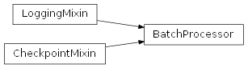
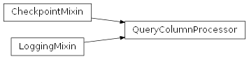
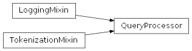

SentimentAnalysis.src.sentiment_analysis.retrieval package
Submodules
SentimentAnalysis.src.sentiment_analysis.retrieval.batch_processor module
batch_processor.py
Version 1.0, updated on 2024-12-04
- class SentimentAnalysis.src.sentiment_analysis.retrieval.batch_processor.BatchProcessor(language: str, samples: MyDataFrame)[source]
Bases:
LoggingMixin,CheckpointMixinBatchProcessor class.
This class manages batch-wise processing of data samples for a specified language. It maintains checkpoints to resume processing after interruptions and aggregates results from processed batches.
- batch_size
The size of each batch, according to the entiment analysis configuration.
- Type:
int
- config
The sentiment analysis configuratation.
- Type:
SentimentAnalysisConfig
- n_possible_batches
The number of possible batches. Computed property.
- Type:
int
- results
The batches results.
- Type:
- results_file_name
The name of the results file.
- Type:
str
- samples
The samples to process in batches.
- Type:
- target_n_batches
The number of batches to process, according to the sentiment analysis configuration.
- Type:
int
- target_n_samples
The number of samples to process. Computed property
- Type:
int
- process_batch(batch_nr: int) None:[source]
Processes the givwn batch of the data.
- process_batches():
Processes all batches for the given language.
- __init__(language: str, samples: MyDataFrame)[source]
Initializes the BatchProcessor with the specified parameters.
- Parameters:
language (str) – Language code.
samples (MyDataFrame) – The MyDataFrame with the samples to process in batches.
- _add_to_results(batch_results: MyDataFrame, batch_nr: int) None[source]
Adds the batch results to the existing results and saves the results.
Adds the batch results to the existing results and saves the results file.
- Parameters:
batch_results (MyDataFrame) – The batch results returned from the chunk processor.
batch_nr (int) – The current batch number.
- _compute_n_possible_batches() None[source]
Computes the possible number of batches and stores it as a property.
- _set_results_file_name() None[source]
Sets the name of the file for the results of the processed batches.
In this file, the sentiment predictions of all targeted batches for the current language are collected.
- _set_target_n_samples() None[source]
Computes the targeted number of samples.
Computes the targeted number of samples from the targeted number of batches and the batch size and sets the corresponding property.
- property n_possible_batches: int
Gets the number of possible batches.
Gets the number of possible batches given the number of samples and the size of the batches.
- process_batch(batch_nr: int) None[source]
Processes the given batch of data.
Extracts the part from the data that corresponds to the batch’s number and size and passes the data on to the chunks processor to add and execute the queries.
Appends the results returned from the chunks processor to the results file and reports any failed answers.
- Parameters:
batch_nr (int) – The number of the batch.
- process_batches()[source]
Processes all batches for the given language.
Creates a checkpoint at the end of each processed batch so that the program can resume after an interruption where it left off. Prevents infinite loops by tracking repeated batch numbers.
- Raises:
LanguageFinishedException – If all batches for the language are processed.
- property results: MyDataFrame
Gets the batches results.
Returns a filled MyDataFrame instance after the batches have been processed. Empty or partially filled until then.
- property results_file_name: str
Gets the name of the results file.
- property samples: MyDataFrame
Gets the samples to process in batches.
- property target_n_samples: int
Gets the number of samples to process.
SentimentAnalysis.src.sentiment_analysis.retrieval.chunk_processor module
chunk_processor.py
Version 1.0, updated on 2024-12-25
- class SentimentAnalysis.src.sentiment_analysis.retrieval.chunk_processor.ChunkProcessor(language: str, batch_samples: MyDataFrame)[source]
Bases:
LoggingMixinChunkProcessor class.
This class provides the attributes and methods for the processing of chunks of the prompts collection.
The multiple prompts generated are divided in smaller collections of variants so that ideally, one chunk can be processed and sent to the LLM’s API before the Hugging Face rate limit hits.
- language
The language of the samples.
- Type:
str
- samples
The batch samples to process.
- Type:
- all_prompts
All prompts generated by the PromptEngineer.
- Type:
PromptsDictType
- chunk
The current chunk being processed.
- Type:
PromptsDictType | None
- chunk_nr
The current chunk number.
- Type:
int
- chunk_samples
The chunk_samples to process in batches.
- Type:
- chunk_size
The size of each chunk, according to the sentiment analysis configuration.
- Type:
int
- iterator_counter
Tracks the number of queries processed.
- Type:
int
- queries_chunker
The queries chunker.
- Type:
DictionaryChunker | None
- skip_chunker
A flag indicating whether to skip the chunk generation in the current iteration.
- Type:
bool
- process_chunk(chunk: PromptsDictType) None:[source]
Processes the given chunk.
- process_chunks() MyDataFrame:[source]
Gets the chunks and processes them iteratively.
- __init__(language: str, batch_samples: MyDataFrame)[source]
Constructor.
Initializes the ChunkProcessor instance.
- Parameters:
language (str) – The language of the samples.
batch_samples (MyDataFrame) – The batch samples to process.
- _add_query_cols(my_df: MyDataFrame, chunk: Dict[str, Dict[str, str]]) MyDataFrame[source]
Creates the chunk samples.
Fills the provided empty MyDataFrame with the samples with which this class was initialized and the query columns composed from the prompt parts in the provided chunk.
Calls the PromptEngineer initialized when the ChunkProcessor itself was initialized to perform this prompt engineering strategy-specific task.
- Parameters:
my_df (MyDataFrame) – The provided empty MyDataFrame, which has already been assigned the correct name attribute for its serialization.
chunk (PromptsDictType) – The current chunk that was returned by the queries chunker, containing the prompt parts from which to build the queries for the samples in the current batch.
- Returns:
The provided MyDataFrame object with the batch samples and different query columns added.
- Return type:
- _generate_chunk() None[source]
Generates the next chunk of prompts and stores it as a property.
Sets the chunk and the iterator_counter properties.
- _get_chunk_samples(chunk: Dict[str, Dict[str, str]]) MyDataFrame[source]
Loads an existing chunk_samples MyDataFrame object or creates it.
- Parameters:
chunk (PromptsDictType) – The current chunk.
- _set_chunk_nr() None[source]
Sets the chunk number for the chunk checkpoint name.
The iterator counter of the chunker corresponds to the number of the queries it has taken from the queries dictionary.
- _set_queries_chunker() None[source]
Splits the prompts in chunks of 15 variants.
Notes
15 queries for 100 samples is the number of queries wich will pass before the Hugging Face rate limit hits.
- property chunk_nr: int
Gets the chunk number.
- property chunk_samples: MyDataFrame
Gets the chunk_samples to process in batches.
- process_chunk(chunk: Dict[str, Dict[str, str]]) None[source]
Processes the given chunk.
Uses the chunk to add query columns to the batch samples by calling the _get_chunk_samples method. The resulting chunk samples are then passed to a QueryColumnProcessor instance which will process the query columns.
- Parameters:
chunk (PromptsDictType) – The current chunk of prompt parts sets needed to generate the query columns.
Notes
If this method passes a newly created chunk to the QueryColumnProcessor, this will raise a ChunkFinishedException, because the current results DataFrame’s columns do not match the query numbers of the new chunk. Therefore, when catching this exception and returning to the process_chunks method, the generation of yet another chunk must be prevented. This is done with the skip_chunker boolean variable.
- process_chunks() MyDataFrame[source]
Gets the chunks and processes them.
In a loop, asks the queries_chunker to return a chunk and calls the process_chunk method to process the chunk.
- Returns:
The chunk samples with all the query and answer columns added.
- Return type:
Notes
The queries chunker iteratively produces chunks and manages the corresponding checkpoint.
- property queries_chunker: DictionaryChunker | None
Gets the queries chunker.
- property samples: MyDataFrame
Gets the samples to process in batches.
SentimentAnalysis.src.sentiment_analysis.retrieval.custom_exceptions module
custom_exceptions.py
Version 1.0, updated on 2024-12-13
This module provides custom exceptions that may be raised in the sentiment retrieval process to control the process workflow.
- exception SentimentAnalysis.src.sentiment_analysis.retrieval.custom_exceptions.BatchFinishedException[source]
Bases:
ExceptionException to handle the switch to the next batch.
- exception SentimentAnalysis.src.sentiment_analysis.retrieval.custom_exceptions.CancelledByUserException(msg='Operation cancelled by the user.')[source]
Bases:
ExceptionException raised when the user cancels an operation.
- exception SentimentAnalysis.src.sentiment_analysis.retrieval.custom_exceptions.ChunkFinishedException[source]
Bases:
ExceptionException to handle the switch to the next chunk.
- exception SentimentAnalysis.src.sentiment_analysis.retrieval.custom_exceptions.CriticalException(logger=None, msg='ValueError.', do_log=True, recursive=False)[source]
Bases:
ValueErrorValueError exception that cannot be caught gracefully.
- __init__(logger=None, msg='ValueError.', do_log=True, recursive=False)[source]
- Parameters:
logger (Logger) – A logger instance. If provided and log_message is True, logs the message. Defaults to None.
msg (str) – The exception message.
do_log (bool) – If True, logs the message using the logger. Default is True.
recursive (bool) – Whether this is a recursive instantiation to prevent re-calling handle_error.
- exception SentimentAnalysis.src.sentiment_analysis.retrieval.custom_exceptions.LanguageFinishedException[source]
Bases:
ExceptionException to handle the switch to the next language.
- exception SentimentAnalysis.src.sentiment_analysis.retrieval.custom_exceptions.PromptInvalidException[source]
Bases:
ExceptionException to handle invalid prompts.
Notes
This custom exception is used in the QueryColumnProcessor and in the ServerlessBloomPromptValidationMixin class.
- SentimentAnalysis.src.sentiment_analysis.retrieval.custom_exceptions.handle_error(logger: Logger, err: Exception, msg: str, err_type: Type[BaseException] = None, err_traceback: TracebackType = None, recursive: bool = False) None[source]
Handle the error and raise the same type of error with the given message.
- Parameters:
logger (object) – The logger object used for logging.
err (Exception) – The original error that occurred.
msg (str) – The error message to be logged and raised.
err_type (Type[BaseException]) – The type of error that occurred. The default is None.
err_traceback (TracebackType) – The traceback of the error. The default is None.
recursive (bool) – Whether recursion has occurred. If True, the function will raise an error to prevent infinite recursion.
SentimentAnalysis.src.sentiment_analysis.retrieval.language_processor module
language_processor.py
Version 1.0, updated on 2024-12-17
- class SentimentAnalysis.src.sentiment_analysis.retrieval.language_processor.LanguageProcessor(language: str, samples: MyDataFrame)[source]
Bases:
LoggingMixinLanguageProcessor class.
This class processes a given dataset of samples for a given language in batches.
- language
The language of the samples to be processed.
- Type:
str
- samples
A MyDataFrame object containing a pandas DataFrame with the samples to be processed
- Type:
- process_language()[source]
Processes the samples for the language in batches.
- __init__(language: str, samples: MyDataFrame)[source]
Constructor.
Initializes a LanguageProcessor instance with the given parameters.
- Parameters:
language (str) – The language of the samples to be processed.
samples (MyDataFrame) – A MyDataFrame object containing a pandas DataFrame with the samples to be processed
- Raises:
CriticalException – If the ‘language’ is empty or not a string, or if ‘samples’ is empty.
TypeError – If ‘samples’ is not an instance of ‘MyDataFrame’.
- process_language() None[source]
Processes the samples for the language in batches.
This method uses the BatchProcessor class to process the samples in batches. If all samples have already been processed for the language, it logs an informational message and moves on to the next language.
- Raises:
LanguageFinishedException – If processing for the current language is already complete.
Notes
The LanguageFinishedException is not re-raised but caught gracefully, logging an info message.
SentimentAnalysis.src.sentiment_analysis.retrieval.query_column_processor module
query_column_processor.py
Version 1.0, updated on 2024-12-25
- class SentimentAnalysis.src.sentiment_analysis.retrieval.query_column_processor.QueryColumnProcessor(language: str, samples: MyDataFrame, chunk_start_at_query_col_nr: int = 1)[source]
Bases:
LoggingMixin,CheckpointMixinQueryColumnProcessor class.
This class handles query columns in batches, managing checkpoints, validating prompts, and saving results. It supports robust handling of interruptions and allows users to control how to proceed in case of errors or invalid query results.
- answers_collection
A set to collect unique answers from processed queries, used to validate prompts.
- Type:
set
- can_save
Indicates whether the current results can be saved.
- Type:
bool
- checkpoint
The checkpoint.
- Type:
- chunk_size
The size of the chunk (i.e. the number of query columns), according to the sentiment analysis configuration.
- Type:
int
- chunk_start_at_query_col_nr
The query column number with which to start a chunk.
- Type:
int
- config
Configuration settings for the sentiment analysis.
- Type:
SentimentAnalysisConfig
- language
The language code corresponding to the language of the samples to process.
- Type:
str
- query_counter
Class-level counter to track the number of queries processed across all instances.
- Type:
int
- samples
A MyDataFrame with the samples whose query columns to process.
- Type:
- load_samples() None:
Loads the samples if they are not already loaded.
- process_query(payload: Dict[str, str]) str | int:[source]
No description available.
- process_query_column(query_col_nr: int) None:[source]
Processes the specified query column.
- process_query_columns() None:[source]
Processes the different query types in a chunk.
- __init__(language: str, samples: MyDataFrame, chunk_start_at_query_col_nr: int = 1)[source]
Initializes the QueryColumnProcessor with the specified parameters.
- Parameters:
language (str) – Language code.
samples (MyDataFrame) – The MyDataFrame with the samples whose query columns to process.
chunk_start_at_query_col_nr (int) – Defines the query column number with which to start a chunk. This number is needed to set the corresponding checkpoint and to calculate the end of the range needed to iterate through the query columns in the process_query_columns method.
- _ask_continue() None[source]
Asks the user if and how the program should continue.
Asks the user to decide whether to proceed and save the column result, to continue without saving or to stop the program altogether. If the user decides to discard the column result, the can_save property of this class is set to false, otherwise to True.
- _extract_chunk_nr_from_checkpoint_name() int[source]
Extracts and returns the chunk number from the checkpoint’s name.
- Returns:
The chunk number
- Return type:
int
- _get_start_query_col_nr() int[source]
Retrieves the query column number from which to start.
- Returns:
The query column number.
- Return type:
int
- _keep_track() None[source]
Outputs the number of the currently processed query in the console.
If validation is required (‘with_validation’ parameter in SentimentAnalysisConfig is set to True), checks the validity of the prompt used in the query column and stops the execution of the query column processor if the prompt is revealed to be invalid.
The prompt is esteemed to be invalid if, after a given amount of processed rows, the number of different answers in the answers set of the class is insufficient:
only one answer type after 50 rows
only two answer types after 100 rows
In case the prompt is found to be invalid, its answers are not saved to the DataFrame.
- Raises:
PromptInvalidException – If validation is required and the prompt is found to be invalid.
Notes
The _validate_batch_result and the _validate_half_batch methods only perform validation attempts if self.config.get(‘with_validation’) is set to True.
- _report_failed_answers(query_nr: int) None[source]
Reports any failed answers occured.
Reports any failed answers occured during the processing of a query column.
If the query column produced failed answers, the user is asked to decide whether to proceed and save the column result, to continue without saving or to stop the program altogether.
- Parameters:
query_nr (int) – The number of the query column.
- _reset_answers_collection() None[source]
Resets the answers_collection set.
Resets the answers_collection set that collects unique answers from the queries.
- _save_col_result(df: DataFrame, query_nr: int) None[source]
Saves the results of the processed query column to the DataFrame.
- Parameters:
df (DataFrame) – The DataFrame containing the results to save.
query_nr (int) – The number of the query column.
- _set_current_chunk_nr(query_col_nr: int) None[source]
Updates the current chunk number based on the query column number.
- Parameters:
query_col_nr (int) – The current query column number.
- _update_query_counter() None[source]
Increments the query counters by 1.
Increments the query counters by 1 and outputs the overall query_counter to the console, thus monitoring the progress of the program.
- _validate_batch_result()[source]
Checks the validity of the prompt at the end of the batch.
If validation is required, the batch results are verified. Results must have produced all three different sentiment classes. Otherwise, the prompt is discarded.
- Raises:
PromptInvalidException – If validation is required and the prompt is found to be invalid.
Notes
The check in this method takes into account that answers may also be empty strings if no sentiment could be extracted from the LLM’s response. If the answers include empty strings, the required number of answer categories must be increased by one.
- _validate_half_batch()[source]
Checks the validity of the prompt half-way through the batch.
If validation is required, the batch results are verified in mid-batch. Results must have produced at least two different sentiment classes. Otherwise, the prompt is discarded.
- Raises:
PromptInvalidException – If validation is required and the prompt is found to be invalid.
Notes
The check in this method takes into account that answers may also be empty strings if no sentiment could be extracted from the LLM’s response. If the answers include empty strings, the required number of answer categories must be increased by one
- chunk_size
Set to collect the different types of answers.
The number of collected items in this set enables to check the validity of the prompt in the query column. The number of different answers should be 3 (‘positive’, ‘negative’ and ‘neutral’). If this is not the case after a sufficient amount of rows has been treated, the prompt is rejected as invalid.
- process_query(payload: Dict[str, str]) str | int[source]
Processes a single query payload using the QueryProcessor.
- Parameters:
payload (Dict[str, str]) – The input data for the query.
- Returns:
The response from the QueryProcessor.
- Return type:
str | int
- Raises:
PromptInvalidException – If the query is invalid when validation is performed.
- process_query_column(query_col_nr: int) None[source]
Processes the specified query column.
Processes the specified query column by applying the query logic to each row.
- Parameters:
query_col_nr (int) – The number of the query column.
- Raises:
PromptInvalidException – If the prompt in the column is deemed invalid.
ChunkFinishedException – If the “try” block raises a KeyError because all rows in the chunk have been processed.
KeyError – If the specified column does not exist in the DataFrame.
- process_query_columns() None[source]
Processes the different query types in a chunk.
Creates a checkpoint at the end of each processed query type so that the program can resume after an interruption where it left off.
- prompt_specific_query_counter: int = 0
- query_counter: int = 0
- property samples: MyDataFrame
Gets the samples to process in batches.
SentimentAnalysis.src.sentiment_analysis.retrieval.query_processor module
query_processor.py
Version 1.0, updated on 2024-12-15
- class SentimentAnalysis.src.sentiment_analysis.retrieval.query_processor.QueryProcessor(payload: Dict[str, str])[source]
Bases:
LoggingMixin,TokenizationMixinQueryProcessor class.
This class is responsible for processing queries sent to a Hugging Face LLM API. It manages query payloads, handles API responses, extracts relevant results, and tracks failed queries for further analysis.
Features:
Validates and sends query payloads to the LLM API.
Processes API responses to extract sentiment predictions.
Implements error-handling mechanisms for API interactions.
Provides utilities for managing failed queries.
Includes configurable tokenization for response processing.
- HF
An instance of the HuggingFaceStrategy class for interacting with the LLM API
- Type:
- failed_answers
A class-level attribute to track failed answers across instances
- Type:
List[Any]
- api
The API endpoint to which queries are sent.
- Type:
str
- payload
The query payload containing input data for the LLM.
- Type:
Dict[str, str]
- prompt_is_invalid
Tracks the validity of the prompt.
- Type:
bool
Inherited Attributes
- DEFAULT_SENTENCE_STRATEGYstr
The name of the default sentence strategy.
- DEFAULT_WORD_STRATEGYstr
The name of the default word strategy.
- sentence_tokenizerSentenceTokenizer
The sentence tokenizer.
- word_tokenizerWordTokenizer
The word tokenizer.
- process_query() str:[source]
Processes the query by sending it to the LLM API and handling the response.
- send_query() Dict[str, Any]:[source]
Sends the query with the payload to the LLM’s API.
Inherited Methods
- set_sentence_tokenizer(tokenization_strategy_name: str = ‘’) -> None:
Sets the sentence tokenizer using the specified strategy.
- set_word_tokenizer(tokenization_strategy_name: str = ‘’) -> None:
Sets the word tokenizer using the specified strategy.
- HF = <src.authentication.hugging_face_strategy.HuggingFaceStrategy object>
- NEGATIVE: str = 'negative'
- NEUTRAL: str = 'neutral'
- POSITIVE: str = 'positive'
- POSSIBLE_RESULTS = ['negative', 'positive', 'neutral']
- _extract_sentiment_from_answer(answer: str) str[source]
Extracts the sentiment from the answer.
Splits the answer into words and returns the first word if this equals one of the sentiment polarities.
- Parameters:
answer (str) – The answer returned from the API, minus the payload text of the query.
- Returns:
The extracted sentiment. An empty string if the first word is not one of the expected sentiment polarities.
- Return type:
str
- _get_generated_text(data) str[source]
Retrieves the generated text from the API response.
- Parameters:
data (Dict[str, Any]) – The raw API response.
- Returns:
The generated text contained in the response.
- Return type:
str
- _get_input_data_from_payload(payload: Dict[str, str]) str[source]
Retrieves the input data from the query payload.
- Parameters:
payload (Dict[str, str]) – The query payload.
- Returns:
The input data string extracted from the payload.
- Return type:
str
- _process_response(response: Dict[str, str]) str[source]
Extracts the predicted sentiment from the response provided by the LLM.
The method performs the following steps:
Remove the input string from the output data.
Split the remaining string at punctuation marks.
Choose only the first element, which is the requested sentiment.
Remove leading and trailing whitespace
- Parameters:
response (Dict[str, str]) – The response from the LLM.
- Returns:
The predicted sentiment. An empty string if the result could not be matched with one of the expected results.
- Return type:
str
- _remove_input_data_from_response(response) Any[source]
Removes the input data from the response text.
- Parameters:
response (Dict[str, Any]) – The raw API response containing the generated text.
- Returns:
The response text with input data removed.
- Return type:
Any
- failed_answers: List[Any] = []
- classmethod flush_failed_answers() List[Any][source]
Returns the list of failed answers and resets the list.
Returns the list of failed answers and resets the list to an empty list.
- Returns:
The list of failed answers before it is reset.
- Return type:
List[Any]
- classmethod get_failed_answers() List[Any][source]
Returns the list of failed answers.
- Returns:
The list of failed answers that could not be processed correctly.
- Return type:
List[Any]
- process_query() str[source]
Processes the query by sending it to the LLM API.
Extracts the predicted sentiment from the response.
- Returns:
The predicted sentiment or an empty string if no valid sentiment is found.
- Return type:
str
- send_query() Dict[str, Any][source]
Sends the query with the payload to the LLM’s API.
Sends the query with the payload defined in this class to the LLM’s API.
- Returns:
The response returned by the API.
- Return type:
Dict[str, Any]
- Raises:
Exception – Unexpected exception of unknown type that could not be caught by the error handling decorator function.
Notes
The query_error_handling decorator of this method catches various exceptions regarding the connection and the kind of response received.
ConnectionError If there is a problem with the connection to the API, the program waits 5 minutes before retrying to send the query.
KeyError This exception is raised when the Hugging Face rate limit is reached. In this case, the program needs to wait 1 hour for the rate limit to expire.
The query originally returns a List[Dict[str, Any]]. This is checked by the query_error_handling decorator, that in turn only returns the first element of the response list (response[0]) as the return value of this method. This change of data type may not be recognized by static type checkers, which may make them complain about the return type.